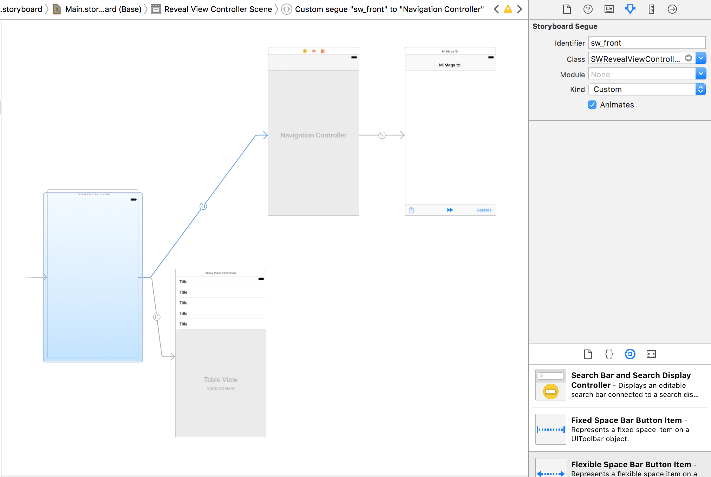

Descripción Coloquial: "Mi Maga" es una aplicación móvil para iPhone la cual incluye más de 1000 frases de libros y novelas romanticas que te daran los buenos días, podrás acceder a tu frase diaria y recibir notificaciónes.
Descripción Técnica: "Mi Maga" es una aplicación móvil para dispositivos iPhone exclusivamente.
Primer paso que hicimos fue meterle el Slide Out Menu, para eso:
1.- Fuimos a esta página http://www.appcoda.com/sidebar-menu-swift/
y descargamos las librerias SWRevealViewController en Objective-C (las cuales vienen incluidas en el proyecto) de github https://github.com/ginppian/mimaga/SlideOutMenu/SWRevealViewController-master/SWRevealViewController.
2.- Las arrastramos, las incluimos al proyecto e hicimos el BRIDGE ¡Importante! darle aceptar.
3.- Pegamos en el archivo mimaga-Bridging-Header.h la siguiente sentencia: #import "SWRevealViewController.h"
4.- Ahora al InitialViewController le asignamos la clase SWRevealViewController, posteriormente arrastramos 2 ViewControllers que representan un view en el frente y un view a tras.

al SEGUE lo nombramos sw_font pues estará al frente
y al que esté a trás dependerá como quieramos que se despliegue si de izquierda a derecha o de derecha a izquierda.
En el primer caso (IZQUIERDA a derecha) nombraremos al SEGUE sw_rear
y agregaremos esto al constructor:
if self.revealViewController() != nil {
menuButton.target = self.revealViewController()
menuButton.action = #selector(SWRevealViewController.revealToggle(_:))
self.view.addGestureRecognizer(self.revealViewController().panGestureRecognizer())
}
En el segundo caso (DERECHA a izquierda) nombraremos al SEGUE sw_right y agregaremos esto al constructor:
if self.revealViewController() != nil {
menuButton.target = self.revealViewController()
menuButton.action = #selector(SWRevealViewController.rightRevealToggle(_:))
self.view.addGestureRecognizer(self.revealViewController().panGestureRecognizer())
}
5.- Agregamos un archivo JSON que contiene: id, frase, autor, horario, imagen. Almacenamos todas nuestras frases y las leemos con una CLASE ESTATICA llamada JSONReader.swift la cual mandamos a llamar de la siguiente manera:
var arrayFrases = [String]()
arrayFrases = JSONReader.readJSONToArrayString(fileName: "libro1", type: ".json", key: "frase")